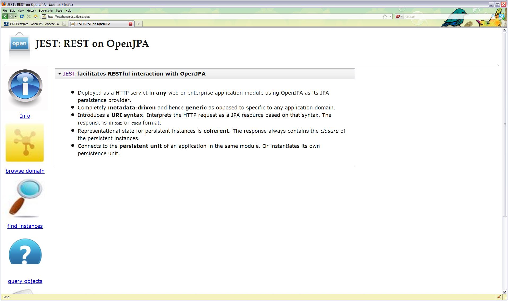

JEST in Action

Description of a Simple JEST-enabled Web Application
A sample is available to demonstrate JEST usage. You will find the example
in OpenJPA code repository under openjpa-examples/jest tree with its
source code and deployment descriptors WEB-INF/web.xml and
META-INF/persistence.xml. The example is a simple servlet
demo.SimpleApp that instantiates a persistent unit named estdemo
and populates a database with few sample records of two persistent entities
demo.Actor and demo.Movie.
Persistence Unit Initialization
The following code from demo.SimpleApp shows the initialization
process at the servlet's init() method.
public class SimpleApp extends HttpServlet {
EntityManagerFactory _emf;
private static String UNIT_NAME = "jestdemo";
@Override
public void init(ServletConfig config) throws ServletException {
super.init(config);
config.getServletContext().log("Initializing persistence unit [" + UNIT_NAME + "]");
try {
Map<String,Object> props = new HashMap<String, Object>();
props.put("openjpa.EntityManagerFactoryPool", "true");
_emf = Persistence.createEntityManagerFactory(UNIT_NAME,props);
new DataLoader().populate(_emf.createEntityManager());
} catch (Exception e) {
throw new ServletException(e);
}
config.getServletContext().log("Initialized with persistence unit [" + UNIT_NAME + "]");
}
It is important to notice that the persistent unit is instantiated so
that the EntityManagerFactory is pooled by OpenJPA. The way to achieve
that is to set configuration property openjpa.EntityManagerFactoryPool
to true. It is also important to note that this property is recognized
only when passed via runtime and not if it were specified in
META-INF/persistence.xml unlike other OpenJPA configuration properties.
Besides instantiating the persistent unit, the servlet does not do anything
else other than serving a welcome index.html web page as its
doGet() method shows:
/**
* The only response by this application is an <code>index.html</code> file.
*/
@Override
protected void doGet(HttpServletRequest req, HttpServletResponse resp)
throws ServletException, IOException {
resp.setContentType("text/html");
OutputStream out = resp.getOutputStream();
InputStream in = getClass().getResourceAsStream("index.html");
for (int c = 0; (c = in.read()) != -1;) {
out.write((char)c);
}
}
Deployment Descriptor to enable JEST
The sample web application deploys demo.SimpleApp servlet and JEST
servlet. The essential aspect of the deployment descriptor
WEB-INF/web.xml is shown below
<web-app version="2.4"
xmlns="http://java.sun.com/xml/ns/j2ee"
xmlns:xsi="http://www.w3.org/2001/XMLSchema-instance"
xsi:schemaLocation="http://java.sun.com/xml/ns/j2ee
http://java.sun.com/xml/ns/j2ee/web-app_2_4.xsd">
<display-name>Demo Application with JEST Servlet</display-name>
<welcome-file-list>
<welcome-file>index.html</welcome-file>
</welcome-file-list>
<servlet>
<servlet-name>demo</servlet-name>
<servlet-class>demo.SimpleApp</servlet-class>
</servlet>
<servlet-mapping>
<servlet-name>demo</servlet-name>
<url-pattern>/*</url-pattern>
</servlet-mapping>
<servlet>
<servlet-name>jest</servlet-name>
<servlet-class>org.apache.openjpa.persistence.jest.JESTServlet</servlet-class>
<init-param>
<param-name>persistence.unit</param-name>
<param-value>jestdemo</param-value>
</init-param>
</servlet>
<servlet-mapping>
<servlet-name>jest</servlet-name>
<url-pattern>/jest/*</url-pattern>
</servlet-mapping>
</web-app>
Discovery of Persistent Unit
As can be seen in WEB-INF/web.xml above, the JEST servlet
org.apache.openjpa.persistence.jest.JESTServlet needs to know the
persistent unit name jestdemo to discover the actual
EntityManagerFactory instantiated by its sibling demo.SimpleApp
servlet. This discovery of an EntityManagerFactory instantiated by
another component is possible because the said
EntityManagerFactory is being pooled by OpenJPA. A more general
discovery mechanics where JEST can discover a EntityManagerFactory
instantiated and injected by the container
would be available in future.
Building the sample application
An Ant build script build.xml is provided and a build.properties to
adjust for local settings. To suit your local environment, please edit the
build.properties for OpenJPA library and META-INF/persistence.xml
for database specifics. The supplied build file compiles two persistent
domain classes demo.Actor and demo.Movie, enhanced them and
packages them in an web archive demo.war. The script assumes that the
OpenJPA library and the JDBC driver (the sample persistence descriptor uses
MySQL, by deafult) are available in shared library of the Servlet Container
and hence does not package these libraries in the web archive
demo.war.
Deploying the sample application
The next step is to deploy this simple web archive demo.war in a
Servlet Container such as Tomcat or a a JEE container. We do not describe
these steps because they are fairly standard.
JEST in action
Once the sample web application is deployed, say in Tomcat running on
localhost:8080, open the web browser http://localhost:8080/demo and
you should see the web page served by demo.SimpleApp. This step
initializes demo.SimpleApp and hence the persistence unit jestdemo.
Now, if you go to URL http://localhost:8080/demo/jest/, the JEST
welcome page will be displayed -- which is JavaScript enabled web page that
demonstrates currently available JEST facilities such as finding or
querying for instances.